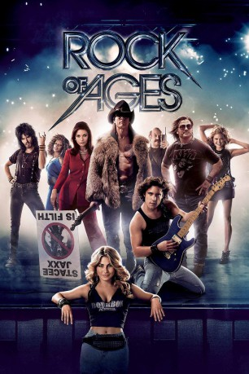

#2615 Rock of Ages
 gesehen am 26.11.2015
gesehen am 26.11.2015
 
 IMDB-Wertung: 5.9 / 10
IMDB-Wertung: 5.9 / 10  Metascore: 47
Metascore: 47 
Kleinstadtmädchen Sherrie lernt den Großstadtjungen Drew auf dem Sunset Strip im Los Angeles des Jahres 1987 kennen. Sie vereint, dass sie jung und wild sind und sich ihre Rock'n'Roll-Träume erfüllen wollen, koste es, was es wolle. Doch ihre Welt ist in Gefahr: Sex, Drogen und Rock'n'Roll sollen auf Betreiben einer Gruppe von Saubermännern und besorgter Eltern gezähmt werden. Um den besten Club der Stadt zu retten, soll Rocklegende Stacee Jaxx sein letztes Konzert im Club spielen.
Jahr: 2012
Dauer: 123 Minuten
FSK: 6
Land: USA Studio: Warner Bros.Tonspuren: DD5.1 - ,
Untertitel:
Auflösung: 1080p (1920x800) Größe: 7270 MB
Genre: Drama, Komödie, Liebe, Musical
Regisseur: Adam Shankman
Drehbuch: Justin Theroux, Chris D'Arienzo, Allan Loeb, Chris D'Arienzo
Soundtrack: Adam Anders, Peer Astrom
Darsteller:
 Julianne Hough als Sherrie Christian
Julianne Hough als Sherrie Christian- Matthew Rush Sullivan als Random Guy
 Diego Boneta als Drew Boley
Diego Boneta als Drew Boley Russell Brand als Lonny
Russell Brand als Lonny Alec Baldwin als Dennis Dupree
Alec Baldwin als Dennis Dupree- Erica Frene als Beth
- Shane Hartline als Bartender Jimmy
 James Martin Kelly als Doug Flintlock
James Martin Kelly als Doug Flintlock Bryan Cranston als Mike Whitmore
Bryan Cranston als Mike Whitmore Catherine Zeta-Jones als Patricia Whitmore
Catherine Zeta-Jones als Patricia Whitmore- Celina Beach als Mayor's Secretary
- Angelo Valderrama als Chico
 Paul Giamatti als Paul Gill
Paul Giamatti als Paul Gill Dan Finnerty als Tour Manager - Stacee
Dan Finnerty als Tour Manager - Stacee Kevin Nash als Stacee's Bodyguard
Kevin Nash als Stacee's Bodyguard Jeff Chase als Stacee's Bodyguard
Jeff Chase als Stacee's Bodyguard Tom Cruise als Stacee Jaxx
Tom Cruise als Stacee Jaxx- Tyne Stecklein als Stacee Groupie
 Anne Fletcher als Church Horse Mother
Anne Fletcher als Church Horse Mother Denise Faye als Protest Mother #1
Denise Faye als Protest Mother #1- Maxwell Terlecki als Drew's Band
- Marcus Johns als Drew's Band
- Vivi Pineda als Waitress #1
- Elvire Emanuelle als Waitress #3
 Malin Akerman als Constance Sack
Malin Akerman als Constance Sack- Brev Sullivan als Arsenal Band
 Will Forte als Mitch Miley
Will Forte als Mitch Miley- Mary J. Blige als Justice
- Anya Garnis als Destiny
- Constantine Maroulis als Record Executive
- Jack Mountford als Z-Guyeezz #2 - Joey Z
 Eli Roth als Stefano
Eli Roth als Stefano- Veronica Berry als Louise / Assistant #2
 T.J. Miller als Rolling Stone Receptionist
T.J. Miller als Rolling Stone Receptionist- Debbie Gibson als Rocker
- Sebastian Bach als Rocker
- Kevin Cronin als Rocker
- Sophie Cook als Female Fan
- Maria Ines Serritella als Dancer / Protesting Mother
- Marnie Alexenburg als News Reporter , uncredited
 Pearce Blair als Game Concession Hawker , uncredited
Pearce Blair als Game Concession Hawker , uncredited- Gail Byer als Protestor Mom , uncredited
- Jason Caceres als Rocker , uncredited
- Lorraine Caporaso als Amusement Park Guest , uncredited
 Santos Caraballo als Homeless man , uncredited
Santos Caraballo als Homeless man , uncredited- Heather Ashley Chase als Venus Room Dancer , uncredited
- Shawn Copenhaver als Rocker , uncredited
- Sarah Dandashy als Rocker Chick , uncredited
 Christopher De Stefano als Rocker Fan , uncredited
Christopher De Stefano als Rocker Fan , uncredited- Jimmy Dempster als Rocker , uncredited
Datei: X:\2012(N-Z)\Rock of Ages (2012, FSK6, 1920x800).mkv seit 25.11.2015
Festplatte: HD 2012(N-Z)-2013(A-H)
 Es gibt insgesamt 138 Filme in der Gruppe '2012(N-Z)'
Es gibt insgesamt 138 Filme in der Gruppe '2012(N-Z)'